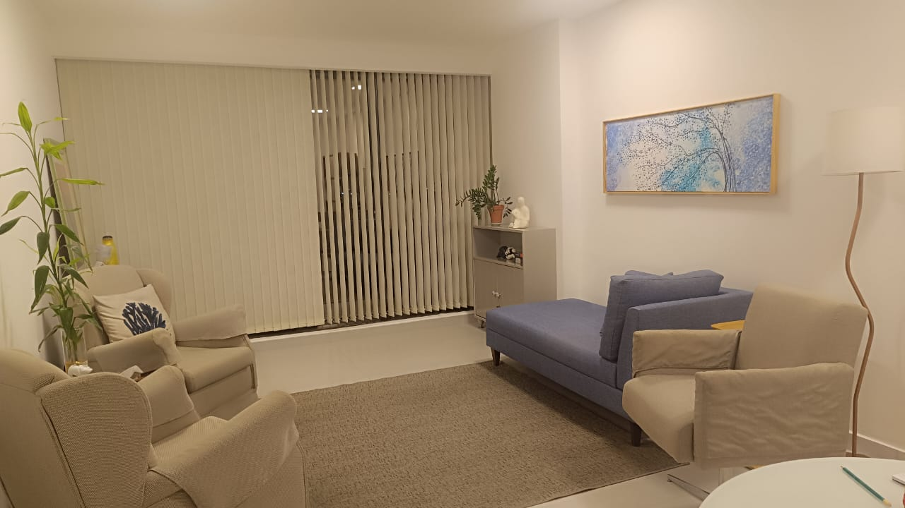

Psicóloga · CRP 02/7436 · Petrolina
Acolher.
Compreender.
Transformar.
Um espaço de escuta, cuidado e compreensão para você construir uma relação mais saudável consigo e com os outros.
Sobre Risoneide
Por trás de cada sintoma, existe uma história.

Acredito que por trás de cada sintoma existe uma história que precisa ser compreendida com respeito, sensibilidade e conhecimento científico.
Meu trabalho é oferecer um espaço de escuta qualificada, onde cada pessoa possa compreender sua trajetória, elaborar dores, fortalecer seus recursos emocionais e construir relações mais saudáveis consigo mesma e com os outros.
Atuo com adolescentes, adultos e casais, especialmente em questões relacionadas à ansiedade, traumas, violência psicológica, relacionamentos, autoestima, desenvolvimento emocional e processos de mudança.
Mais do que aliviar o sofrimento, meu propósito é ajudar pessoas a encontrarem sentido, autonomia e uma forma mais saudável de viver suas relações.
Mais de 30 anos
de experiência
30+
Anos dedicados ao cuidado
O futuro é tecnológico, mas o cuidado continua sendo humano.
Escuta que encontra você
Principais áreas de atuação
Ansiedade
Compreensão dos gatilhos e construção de novos recursos emocionais.
Traumas
Escuta cuidadosa para elaborar experiências que ainda causam sofrimento.
Violência psicológica
Acolhimento para reconhecer vivências e reconstruir autonomia.
Relacionamentos
Novas formas de compreender vínculos, conflitos e afetos.
Autoestima
Fortalecimento da relação consigo e com a própria história.
Desenvolvimento emocional
Consciência para lidar com sentimentos e escolhas.
Processos de mudança
Apoio para atravessar transições com mais clareza.
Saúde emocional
Cuidado contínuo com o bem-estar psíquico.
Atendimento a homens
Um espaço seguro para falar sem julgamentos.
Adolescentes
Escuta para os desafios emocionais a partir dos 16 anos.
Adultos
Acompanhamento de questões emocionais, comportamentais e relacionais.
Casais
Compreensão dos vínculos e construção de diálogos mais saudáveis.
Psicoterapia para homens
Um espaço para homens também falarem.
Muitos homens cresceram aprendendo a esconder suas dores, controlar seus sentimentos e enfrentar dificuldades em silêncio.
A psicoterapia também pode ser um espaço seguro para falar sobre aquilo que muitas vezes é difícil colocar em palavras.
Atendimentos e valores
Encontre o atendimento que faz sentido para você.
Atendimento individual
Consulta Psicológica do Adulto
Atendimento psicológico individual para adultos.
A partir de R$ 250
Consultar atendimentoConsulta Psicológica do Adolescente
Atendimento psicológico para adolescentes a partir de 16 anos.
A partir de R$ 250
Consultar atendimentoConsulta Psicológica do Idoso
Atendimento psicológico direcionado ao público idoso.
A partir de R$ 250
Consultar atendimentoPsicoterapia Adulto
Atendimento individual voltado para questões emocionais, comportamentais e relacionais.
A partir de R$ 250
Consultar atendimentoPsicoterapia Psicanalítica
Processo baseado na abordagem psicanalítica para compreender conflitos, emoções e a história de vida.
Consultar valores
Consultar atendimentoPrimeiro encontro
A primeira consulta possui um tempo maior, permitindo conhecer melhor sua história, necessidades e objetivos.
O cuidado deve ser possível.
Caso o valor seja uma dificuldade neste momento, entre em contato para conversarmos sobre possibilidades de negociação e acordos.
Conversar sobre atendimentoMeu espaço e minha presença
Cuidado próximo, escuta atenta e um espaço para acolher.

Uma convicção
No futuro das máquinas, sigo sendo presença.
Atendimento presencial
Você pode me encontrar em Petrolina.
Centro
Petrolina - PE
CEP 56304-040
O primeiro passo
Talvez o primeiro passo seja simplesmente conversar.
Se você sente que precisa compreender melhor o que está vivendo, estou aqui para ouvir.
Agendar pelo WhatsApp